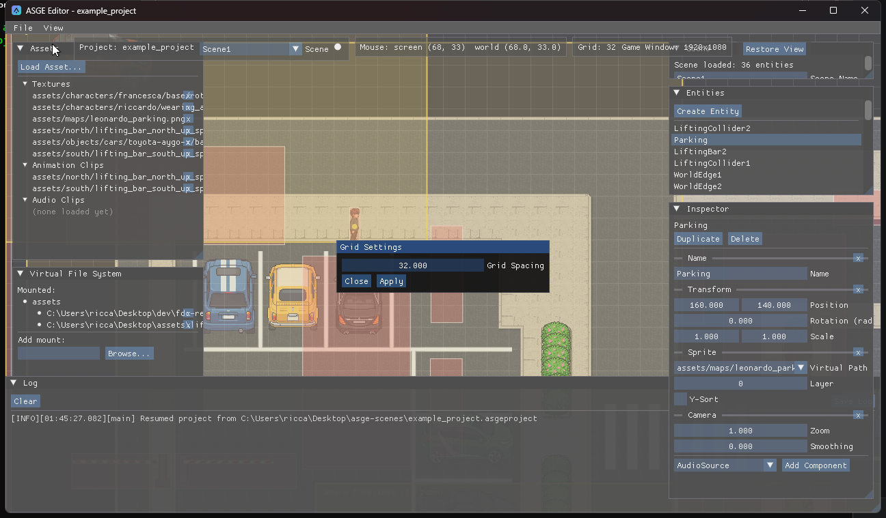
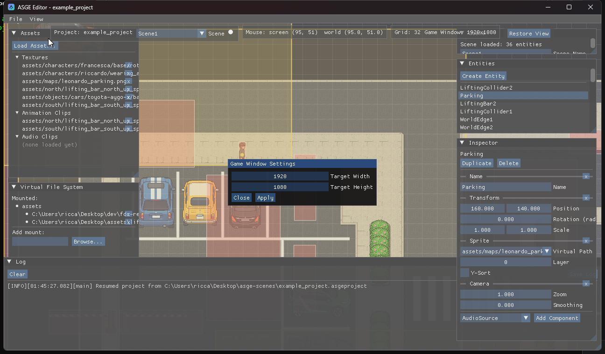

Viewport & Navigation
The viewport is a real, resizable window with the engine's own camera/viewport math underneath -- every overlay pans and zooms exactly like the scene itself does.
- Left-drag Move the clicked entity (or drag a gizmo arm to constrain to one axis)
- Middle-drag Pan the camera
- Scroll Zoom, anchored on the point under the cursor
- Restore View Reset pan/zoom back to the default

Grid & game window settings


Both live under the View menu (disabled
without a project). Grid sets the world-space spacing between the reference grid
lines drawn behind every sprite; Game Window sets the target width/height a real
build of the game would actually run at -- both saved as part of the project's own [View]
settings, not scene data.
Camera & game-window previews
Every entity with a Camera component gets a live preview box in
the viewport: a world-space rect showing exactly what that camera would frame at the configured
game window size, centered on the entity's own visual midpoint (its Sprite's bounds, not just its
Transform's corner) at that camera's zoom -- the same math systems::CameraSystem uses
at runtime, just never applied to the editor's own view. A separate single preview, anchored at
the world origin, shows the letterboxed game window itself regardless of any Camera component,
dimming everything outside it like a real letterbox.